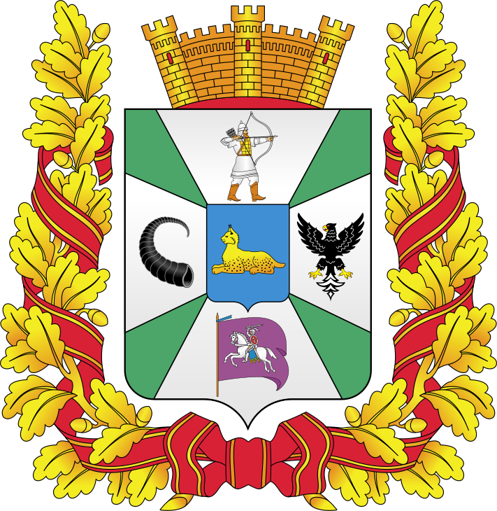
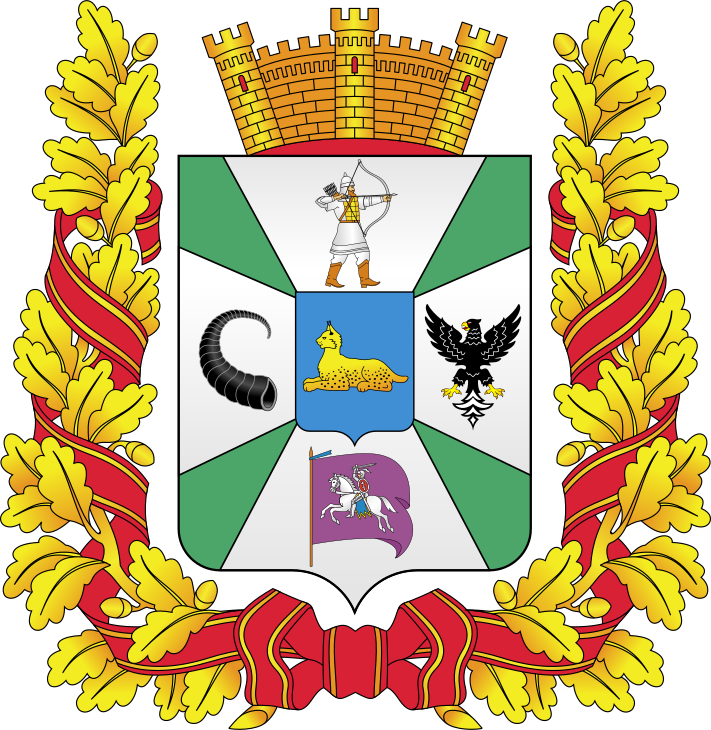

Добро пожаловать в Гомельскую область!
Географическая информация
Гомельская область расположена в юго-восточной части Беларуси. На ее
территории находится крайняя южная точка страны - на реке Днепр к югу от
городского поселка Комарин Брагинского района. Ее координаты - 51°16'
северной широты и 30°35' восточной долготы. Площадь - 40,4 тыс. кв.км.
Регион занимает пятую часть территории страны, граничит сразу с четырьмя
областями Украины (Киевской, Черниговской, Житомирской и Ровенской) и
одной областью России (Брянской). Гомельская область расположена на
Восточно-Европейской равнине, на которой встречаются размытые
возвышенности и холмы. Самой высокой из них является Мозырская гряда,
имеющая высоту 206 м.
 


Промышленность
Гомельская область – крупнейший индустриальный регион страны. В ней
развита топливная и металлургическая, машиностроительная и
металлообрабатывающая, деревообрабатывающая и целлюлозно-бумажная,
химическая и нефтехимическая, легкая и пищевая промышленность. Работают
и гиганты республиканского масштаба, продукцию которых хорошо знают в
стране и за рубежом.

Как появилась Гомельская область?
Человек начал обживать территорию современной Гомельской области в эпоху
палеолита. Следы стоянок родовых общин, которые существовали 23-26 тыс.
лет назад, обнаружены в Чечерском (д. Бердыж) и Калинковичском (д.
Юровичи) районах. Климат в то время был холодным; растительность —
скудная, характерная для арктической тундры. Первые жители края
занимались охотой и собирательством. Жилье строили из валунов и костей
мамонтов. Внутри размещали очаг. Пользовались обычными для той эпохи
орудиями труда — резцами, скребками, копьями, ножами. На рубеже 3-го и
2-го тысячелетий до н.э. поздненеолитическое население Гомельского
Поднепровья ассимилируется индоевропейскими племенами. В 7—6 веках до
нашей эры люди на территории Гомельской области научились изготавливать
орудия труда из железа. Этот металл они добывали из болотной руды.
Основным занятием племен стало подсечное земледелие. Следы городищ и
селищ (укрепленных и неукрепленных поселений), могильников с
захоронениями по обряду сожжения часто встречаются по берегам крупных и
малых рек. Многие памятники этого времени оставлены древними славянами.
Римские и византийские историки и географы знали их под именами венедов,
склавинов и антов. Славяне поддерживали торговые связи с кельтами —
населением Центральной Европы, скифами — племенами Северного
Причерноморья, древнегреческими и римскими городами. Из древнегреческих
городов в Поднепровье и Посожье ввозили украшения из драгоценных
металлов, стеклянные бусы, глиняную посуду (амфоры), ткани. Переход от
первобытного строя к феодализму у народов, населявших территорию
области, проходил в первом тысячелетии нашей эры. Древнерусская летопись
"Повесть временных лет" называет два восточнославянских племени,
проживавших в IX — XII веках на Гомельщине — дреговичи и радимичи. Они
занимались земледелием, животноводством, охотой, рыболовством,
бортничеством, торговлей, ремеслами. Дреговичи жили на землях между
Днепром, Березиной и Припятью. В конце первого тысячелетия образовали
племенное княжество с центром в Турове. Их первым легендарным князем
считается Тур. Радимичи селились вдоль реки Сож и ее притоков. Согласно
легенде, их предводителем был Радим, пришедший со своим родом из
западнославянских земель. До конца Х века они сохраняли относительную
независимость и управлялись собственными князьями и старейшинами. Вместе
с другими племенами участвовали в военных походах киевских князей на
столицу могущественной Византии — Константинополь. После объединения в
Древнерусском государстве родственные племена дреговичей и радимичей,
наряду с другими восточными славянами, постепенно слились в единую
древнерусскую народность. С конца Х века земли дреговичей были подчинены
власти туровских князей. В Х столетии Туровское княжество вошло в число
сильнейших княжеств Древней Руси. В X — XII веках Туров стал крупным
экономическим, политическим и культурным центром Руси. Здесь процветали
швейное, косторезное, ювелирное, гончарное, метало- и
деревообрабатывающее ремесла и торговля. Река Припять служила водным
путем на запад и восток. Столицу княжества украшали великолепные храмы.
Остатки одного из них, датируемого XII в., найдены при археологических
исследованиях древнего городища в 1963 г. По своей архитектуре он близок
соборам Киева и Владимира. О том, что Туров — один из древнейших центров
письменности и летописания, свидетельствует найденный здесь в 1866 г.
фрагмент «Евангелия» XI в., самой древней книги на территории Беларуси.
В Турове жил и работал епископ Кирила Туровский (около 1130-1182 гг.),
человек высокообразованный, автор многих проповедей, поучений и молитв,
философ и литератор. В XII в. Киевская Русь распалась на несколько
самостоятельных княжеств. Территория нынешней Гомельской области в тот
период входила в состав Черниговского (Гомель, Чечерск,
Речица),Туровского (Туров, Рогачев), Киевского (Мозырь, Брагин) и
Смоленского княжеств. Несмотря на войны и феодальные междоусобицы,
княжества вели оживленную торговлю как с ближайшими соседями, так и с
дальними землями и странами. Главными торговыми путями были реки. По
Днепру проходил путь «из варяг в греки», который связывал наш край с
Прибалтикой и Причерноморьем. По Припяти шли торговые караваны в Польшу
и Чехию. Из восточнославянских княжеств вывозились меха, мед, воск. Из
Византии и Ближнего Востока ввозили шелковые ткани, пряности, стеклянную
и фаянсовую посуду. О широких торговых связях свидетельствуют находки на
территории области арабских и византийских монет. В середине XIII века
развитие земель было прервано опустошительным монголо-татарским
нашествием, затормозившим экономическую, культурную и политическую
консолидацию восточно-славянской государственности. Во второй половине
XIII — начале XIV вв. западнорусские земли переживают упадок и
постепенно попадают под власть Великого княжества Литовского. Около 1316
года к Литовскому государству были присоединены Туров и Мозырь, около
1335 года — Гомель. В XIV—XV веках формируется белорусская народность,
белорусский язык становится государственным языком ВКЛ. В XVI в. земли
современной Беларуси, в том числе и Гомелыцина, стали ареной военных
действий. Начало столетия ознаменовалось русско-литовской войной
(1500-1503 гг.), в результате которой 29 городов, в их составе Гомель и
часть Рогачевского староства, отошли к Москве. Бесконечные войны на
территории края внесли специфику в развитие городов, которые в первую
очередь рассматривались как крепости, а не торговые и промышленные
центры. Важным условием для развития торговли было наличие у города
магдебурского права. Полное магдебургское право в 1577 г. получил
Мозырь, а право на самоуправление приобрели Речица (1561 г.) и Гомель
(1670 г.). В первой половине XIX века на Гомельщине, как и во всей
стране, нарастал кризис феодального строя. По-прежнему в сельском
хозяйстве господствовало помещичье землевладение. Крупнейшими
землевладельцами были графы Румянцевы, огромные земли принадлежали князю
И.Ф. Паскевичу. Но уже возникали и чисто капиталистические предприятия
мануфактурного типа с наемным трудом. Развивались главным образом
предприятия по переработке сельхозсырья: винокуренные, мукомольные,
маслодельные, а также кирпичные заводы. Всего в середине XIX века на
Гомельщине имелось 95 крупных промышленных предприятий. Способствовала
развитию капитализма на Гомельщине и отмена в 1861 году крепостного
права. Во второй половине XIX века развивающийся капитализм постепенно
стал менять облик края. Гомельщина оказалась на пересечении важнейших
путей сообщения. По Днепру, Сожу, Припяти началось паровое судоходство,
в 1873 году — движение по Либаво-Роменской дороге (Бахмач — Гомель —
Минск), в 80-е годы — по Полесской железной дороге. В начале ХХ века
вступил в строй участок Жлобин — Калинковичи. Железнодорожное
строительство способствовало развитию машиностроения. Капиталистическое
развитие Гомельщины меняло и социальный состав населения, порождая
промышленный пролетариат. Первым крупным выступлением пролетариата
Гомельщины стала стачка рабочих гомельских механических мастерских
Либаво-Роменской железной дороги в 1886 году. Рабочие частично добились
своих требований. К началу 1917 года в России сложилась революционная
ситуация. Свержение российского самодержавия в Гомельской области в 1917
году было бескровным. С марта 1918 года территория области оккупирована
германскими войсками. К мирной жизни население Гомельщины вернулось в
1920 году. За период гражданской войны и иностранной интервенции объем
промышленного производства в Гомельской области сократился в 7 раз и
составил 14% от уровня 1913 года. В годы первых пятилеток на Гомелыцине
продолжалось строительство новых предприятий. Были введены в строй
спичечная фабрика «Днепр» (г. Речица); заводы «Гомсельмаш»,
жирокомбинат, стеклозавод; деревообрабатывающий комбинат (г. Гомель).
Восстанавливались и обновлялись дореволюционные производства (бумажная
фабрика в Добруше и др.). Создавались колхозы и совхозы. К 1940 г. на
территории Гомельской и Полесской областей работало свыше 10 200 мелких
и крупных промышленных предприятий, 62 машинно-тракторные станции (МТС).
24 июня 1941 года вражеская авиация немецко-фашистских захватчиков
подвергла бомбардировке Гомель и другие населенные пункты области.
Предприятия Гомеля перешли на военные рельсы и наладили выпуск
продукции, необходимой для фронта. На территории области действовали
подпольные обкомы, горкомы, райкомы партии. Партизаны наносили ощутимые
удары по врагу. 10 ноября 1943 года войска Белорусского фронта под
командованием К. Рокоссовского начали Гомельско-Речицкую операцию, в
результате которой 26 ноября 1943 года Гомель был полностью освобожден
от гитлеровцев. Немецко-фашистские оккупанты нанесли огромный ущерб
народному хозяйству Гомельской области. Были уничтожены 4918
промышленных предприятий, все электростанции, сожжены более 1000
деревень. Гомель был разрушен более чем на 80 процентов. Большим
разрушениям подверглись Мозырь, Жлобин, Рогачев и многие другие города
Гомельщины. Полностью были уничтожены все машинно-тракторные станции,
общественное хозяйство колхозов и совхозов, в большинстве районов
сожжены или разрушены все хозпостройки. За годы оккупации Гомельщины
фашисты уничтожили более 209 тысяч человек, вывезли в Германию свыше 40
тысяч человек. Сразу же после освобождения жители Гомельщины начали
восстанавливать разрушенные города и села. К 1950 г. возобновили свою
работу почти все предприятия довоенного времени. В I960-1970-е годы
введены в строй новые крупные предприятия: Гомельский суперфосфатный
(1966 г.), Гомельский литейный завод «Цетролит» (1968 г.), Мозырский
нефтеперерабатывающий завод (1975 г.), Жлобинская фабрика искусственного
меха (1975 г.), Добрушский фарфоровый завод (1978 г.). В 1964 г. возле
д. Капоровка Речицкого района открыто первое в Беларуси нефтяное
месторождение. В 1967 г. за активное участие в партизанском движении,
мужество, проявленное в борьбе с немецко-фашистскими захватчиками, а
также за успехи в восстановлении и развитии народного хозяйства
Гомельская область была награждена орденом Ленина.

Интерестные факты
Гомельщина простирается на юго-востоке Беларуси, поэтому ее жители
раньше всех встречают рассвет.
В августе 1936 года в Гомеле была открыта первая в БССР детская железная
дорога.
В области находится 70% полезных икопаемых Беларуси.
В Гомельской области находится самое большое количество водоёмов.
вернуться на главную
вернуться в начало